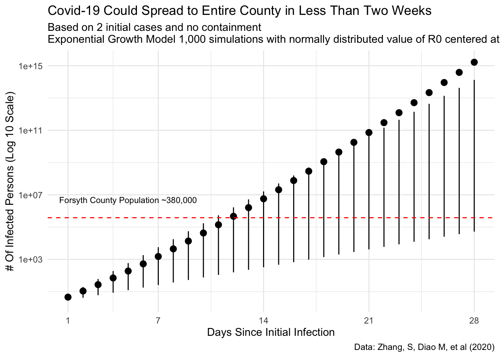
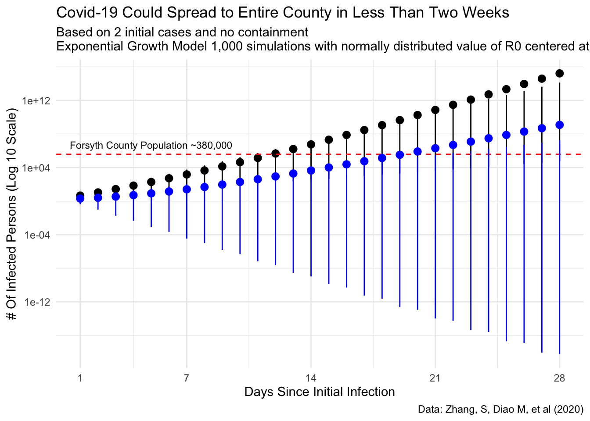
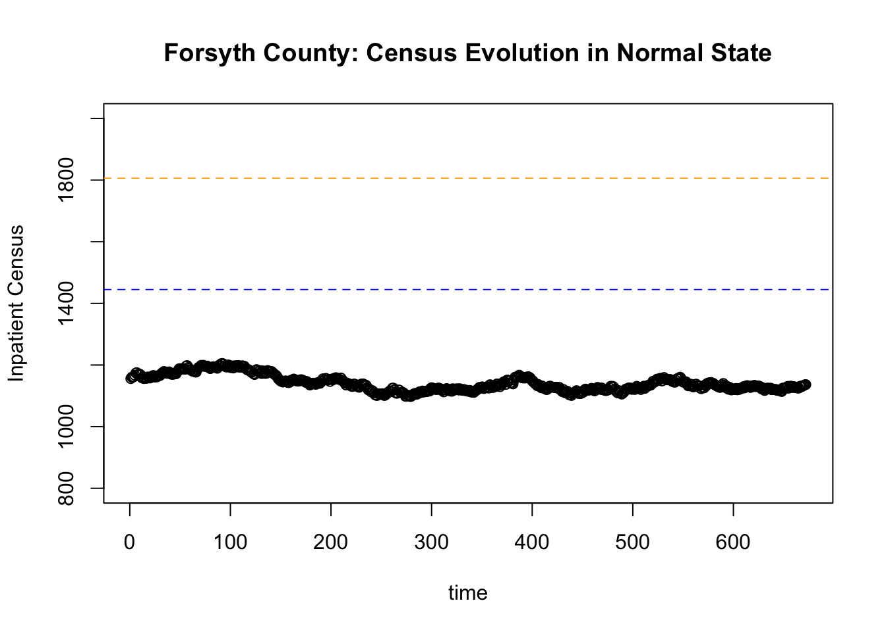
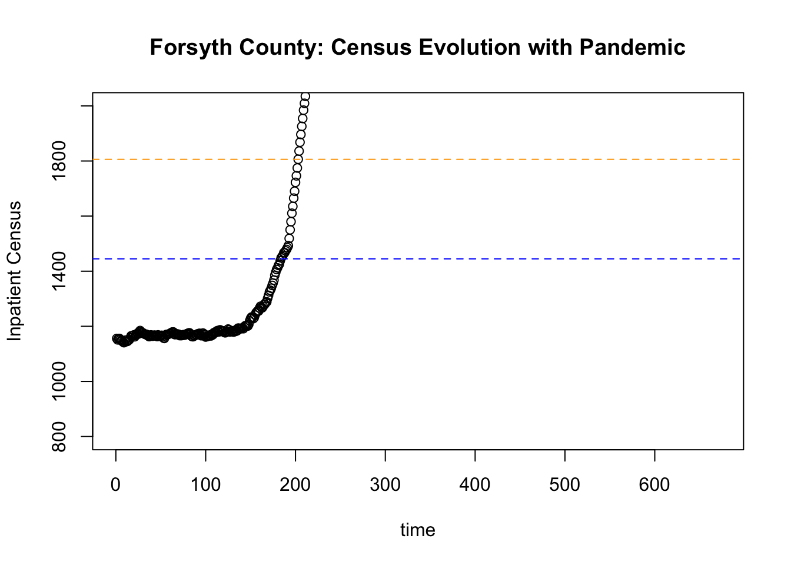
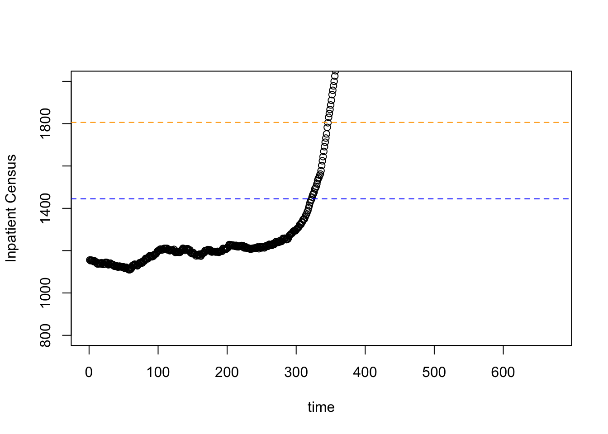

In the post I explore the potential growth rate of Covid-19 to Forsyth County, NC. This also includes looking at the kind of load that this virus could place on our existing healthcare systems. I strongly advocate for acting to delay to flood of potential community acquired infections.
I just wanted to write up a quick exponential growth model for my county. I have been saddened that the local department of public health has been underestimating the power of exponential growth.
Setting Up the Model
Just using some of the numbers that have been floating around (and cited in some recent literature that when I am not tired I will cite1) one can quickly simulate possible infections. I am not an epidemiologist, but I do have a strong appreciation for exponential growth.
To build the model, I am going to take a reproductive rate of 2.28. Additionally, we can add some noise to this estimate in order to simulate 1,000 different scenarios. We know that we have two initial cases (more now as I write), so we’ll take that as \(x_0\)
So we take the following model:
\[y_{infected}=x_0*(R_0)^t\]
Where:
\[x_0 = \text{initial number of cases}\]
\[R_0 = \text{Reproductive Number}\]
\[t = \text{time period}\]
Additionally, for this simulation we will assume:
\[R_0 \sim N(2.28,.5)\]
The Normal distribution might not be the best probability distribution to assume for this number (here’s where a split or two piece distribution would make sense because we know it might not be much lower but could be much higher.), but it will be a good start at least to get a sign and magnitude feel for the situation.
library(dplyr)library(ggplot2)r0 <-rnorm(1000, 2.28,.5)possibilities <-vector()for(i inseq_along(r0)){ possibilities <-cbind(possibilities, 2*r0[i]^(1:28))}results <-tibble(avg =apply(possibilities, MARGIN =1, FUN = mean),q05 =apply(possibilities, MARGIN =1, FUN = quantile, probs = .05),q95 =apply(possibilities, MARGIN =1, FUN = quantile, probs =0.95),day =1:28)p<- results %>%ggplot(aes(day))+geom_pointrange(aes(ymin = q05, y = avg, ymax = q95))+geom_hline(yintercept =380000, lty ="dashed", color ="red")+scale_y_log10()+scale_x_continuous(breaks =c(1,7,14,21, 28))+annotate(geom ="text", x =5, y =5000000, size =3, label ="Forsyth County Population ~380,000")+labs(title ="Covid-19 Could Spread to Entire County in Less Than Two Weeks",subtitle ="Based on 2 initial cases and no containment\nExponential Growth Model 1,000 simulations with normally distributed value of R0 centered at 2.28",y ="# Of Infected Persons (Log 10 Scale)",x ="Days Since Initial Infection",caption ="Data: Zhang, S, Diao M, et al (2020)" )p

Estimation of Number of Infections in Forsyth County with 90% Confidence Intervals Shown
Now when we talk about flattening the curve, if we can reduce the reproductive rate mean value from above 2 to one, we can see the following:
r0 <-rnorm(1000, 1,.5)abatement <-vector()for(i inseq_along(r0)){ abatement <-cbind(abatement, 2*r0[i]^(1:28))}results_abetment <-tibble(avg =apply(abatement, MARGIN =1, FUN = mean),q05 =apply(abatement, MARGIN =1, FUN = quantile, probs = .05),q95 =apply(abatement, MARGIN =1, FUN = quantile, probs =0.95),day =1:28)p+geom_pointrange(data = results_abetment,aes(ymin = q05, y = avg, ymax = q95), color ="blue")

Number of Infections in Forsyth County with Reproductive Rate of 1
This is a much better situation. Regardless, we are still looking at a lot of sick people. The entire county could quite possibly be infected within the month, but at least there is some delay to allow our health system to compensate and put plans into place.
Hospital Capacity
Which really is the main point of it all: massive increases in the sick put huge stress on the hospitals and health care systems in general.
In Forsyth county we have two main hospitals Novant Forsyth (921 registered beds) and Wake Forest Baptist Medical Center (885 registered beds). All in that gives us 1806 beds. In reality, most hospitals operate at 80% capacity be it through staffing decisions (or inability to find nursing, etc) or through protection of surge capacity for just these types of issues.
Flow
For the sake of this simulation let’s assume that about 20% of the staffed beds turn over each day. Additionally, assume that there is some additional admit/discharge capacity. Here I mean how fast can the hospital actually process people (e.g. it takes time to move a patient, find a bed for them, go through the admission process. On the discharge there is some time spend arranging for placement, finding transportation, etc).
Now we can simulate the rough census or volume of patients in the hospital at any given time using the following simulation.
This is a very rough approximation of a hospital operations.
We have:
Total number of beds
Total number of staffed beds
Our flow (generally speaking 20% of the hospital turns over per day)
Convert flow to an hourly rate (which we will assume is Poisson distributed )
Processing rate (which we will assume in normally distributed)
plot(queue, ylim=c(800, 2000), ylab ="Inpatient Census", xlab ="time", main ="Forsyth County: Census Evolution in Normal State")abline(h=staffed_beds, lty ="dashed", col ="blue")abline(h=n_beds, lty ="dashed", col ="orange")

Hospital Census No Pandemic
Pretty stable, without saturating the system.
Now a Pandemic
Now we can our above pandemic simulation. Let’s also assume that each patient stays for 7 days. This means that we admit patients for seven days before they are discharged.
We can see very quickly that saturates the healthcare system (actually the number patients outnumbers the number of beds available by day 8).
plot(queue_pan, ylim=c(800, 2000), ylab ="Inpatient Census", xlab ="time", main ="Forsyth County: Census Evolution with Pandemic")abline(h=staffed_beds, lty ="dashed", col ="blue")abline(h=n_beds, lty ="dashed", col ="orange")

Hospital Census With Uncontrolled Pandemic
Now here is where it is important to flatten the curve. If we can lower the reproductive rate through the normal pathways: hand washing, social distancing, etc, we can see we will still have an issue:
We can see that we still saturate the system by day 14, but at least we have a few more days. In reality, all of these models are approximations
plot(queue_pan, ylim=c(800, 2000), ylab ="Inpatient Census", xlab ="time")abline(h=staffed_beds, lty ="dashed", col ="blue")abline(h=n_beds, lty ="dashed", col ="orange")

Hospital Census With Uncontrolled Pandemic
Conclusion
Pandemics are real, and locally we can control our own destiny. We need to be cautious and exercise care when dealing with these kinds of things and do our part to “flatten the curve”.
![]()